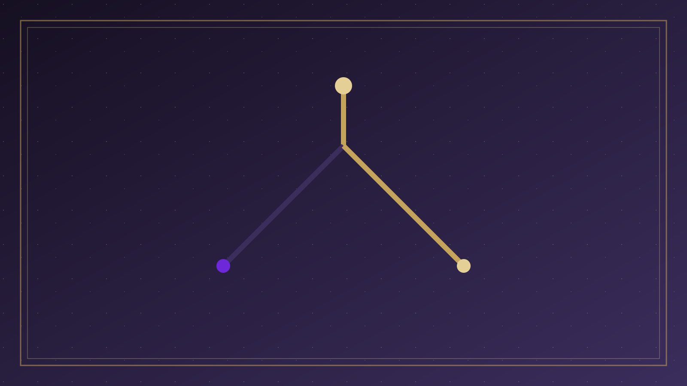

分題 01 / 08
引言與核心問題
核心問題
詞彙與問題
聖經有沒有「自由意志」這詞？人是否仍在作真實的選擇？
主權與責任
神的定旨與人的作為，經文如何同時敘述，而不互相取消？
真自由何處來
自由是任意選擇，還是脫離罪、歸向神？聖靈如何更新意志？

引言 「人有沒有自由意志？

分題 01 / 08
聖經有沒有「自由意志」這詞？人是否仍在作真實的選擇？
神的定旨與人的作為，經文如何同時敘述，而不互相取消？
自由是任意選擇，還是脫離罪、歸向神？聖靈如何更新意志？